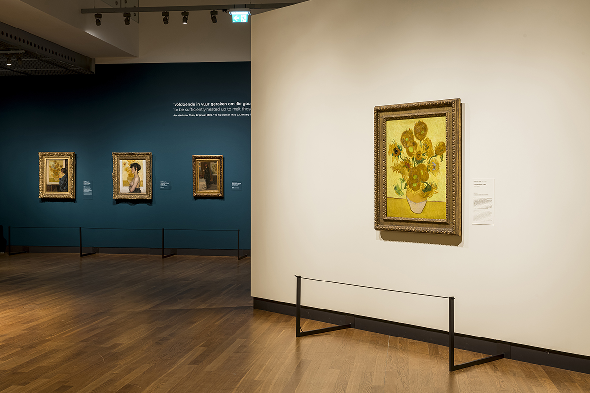
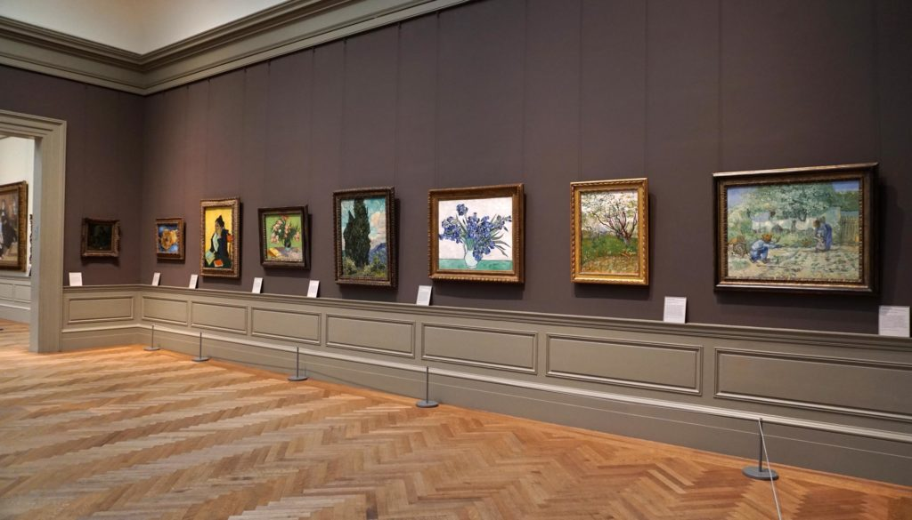
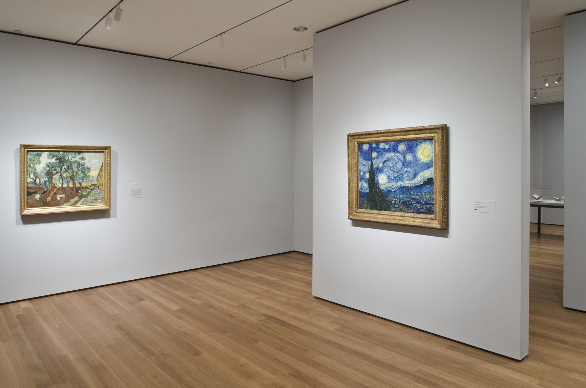
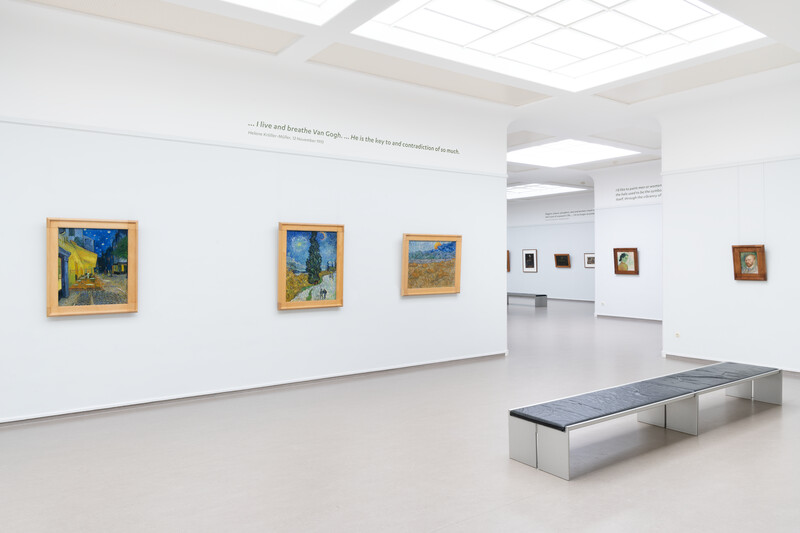

This page contains some of the most popular Van Gogh collection in various museums. Of course there are many more museums exhibiting his work, yet these four museums are my personal favorites.
Van Gogh Museum Amsterdam
Museum in Amsterdam, Netherlands
The Van Gogh Museum is a Dutch art museum dedicated to the works of Vincent van Gogh and his contemporaries in the Museum Square in Amsterdam South, close to the Stedelijk Museum, the Rijksmuseum, and the Concertgebouw. The museum opened on 2 June 1973, and its buildings were designed by Gerrit Rietveld and Kisho Kurokawa. The museum contains the largest collection of Van Gogh's paintings and drawings in the world. In 2017, the museum had 2.3 million visitors and was the most-visited museum in the Netherlands, and the 23rd-most-visited art museum in the world. In 2019, the Van Gogh Museum launched the Meet Vincent Van Gogh Experience, a technology-driven "immersive exhibition" on Van Gogh's life and works, which has toured globally (Source: Wikipedia).
Metropolitan Museum of Art
Museum in New York City, New York
Vincent van Gogh’s work is in such high demand for exhibitions around the world that it’s rare to find 16 of the Metropolitan Museum of Art’s paintings by the Dutch master at home together in New York at one time. But now, for the first time in four years, the Met’s full set of Van Gogh canvases from the department of European paintings are on view at the museum in galleries 822 and 825 (Source: artnet).
The Museum of Modern Art
Museum in New York City, New York
As one of the most recognized painting in Western Art, Vincent van Gogh's The Starry Night has been a visitor favorite at MoMA since it first appeared in our Van Gogh retrospective in 1935 and then was acquired in 1941. To become acquainted with the heart and mind of its maker, there is no better source than his letters (Source: MOMA).
Kröller-Müller Museum
Art museum in Otterlo, Netherlands
The Kröller-Müller Museum is Vincent van Gogh’s second home. With almost 90 paintings and over 180 drawings, the museum has the second-largest Van Gogh collection in the world. Since the opening of the Kröller-Müller Museum in 1938, the works of Vincent Van Gogh have hung in the heart of the building: a corridor around a small patio, now called the Van Gogh gallery. The work of Vincent van Gogh occupies a special place in the collection of Anton and Helene Kröller-Müller, the founders of the Kröller-Müller Museum. Thanks to them, the museum has the second largest Van Gogh collection in the world. Between 1908 and 1929, they purchase no fewer than 91 paintings and more than 180 works on paper. Their budget is virtually unlimited. Helene considers Van Gogh to be 'one of the great spirits of modern art'(Source: Kröller-Müller Museum).